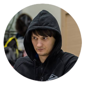
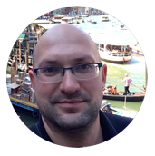
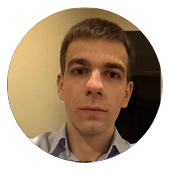
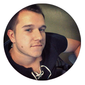
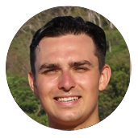
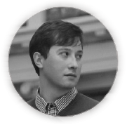
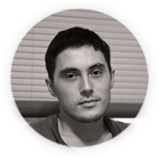
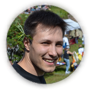
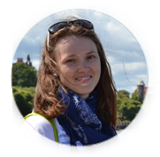

ДОКЛАДЧИКИ


Галина
Галкина
Галкина
Начальник Управления тестирования банковских систем Сбербанк Технологии. В тестировании с 2002 года. Работала в «гигантах» ИТ телекома и банкинга: CBOSS, Luxoft, Ситроникс Телеком Солюшнс. Прошла профессиональный путь от «работы руками» до выстраивания работы команд/подразделений


Станислав
Сидристый
Сидристый
Архитектор решений компании Luxoft. Участвовал в многих проектах компании, занимался как разработкой, так и автоматизацией тестирования как .NET/WPF приложений, так и Java/Groovy Web приложений. Разрабатывал для огромного спектра платформ, руководил как разработкой так и тестированием

Роман
Романов
Романов
Генеральный директор компании Pentestit, сертифицированный специалист в области обеспечения безопасности информационных систем, докладчик на международных конференциях. Топ-эксперт Института Развития Интернета (секция "информационная безопасность")

Лука
Сафонов
Сафонов
Технический директор компании Pentestit, автор многочисленных докладов и исследований в области практической информационной безопасности, докладчик на международных форумах и конференциях. Имеет более 10 лет практического опыта тестирования на проникновение информационных систем государственного, финансового и e-commerce секторов. Эксперт Института Развития Интернета (секция "информационная безопасность")

Роман
Иовлев
Иовлев
Chief QA Automation и евангелист в компании EPAM. Посчастливилось поучаствовать в различных конференциях таких как SQA Days, Agile Days, IT Week, IT Subbotnik и EuroStar. Автор фреймворка для автоматизированного тестирования VIQA и набора утилит для DDT (VIQA TDG - test data generator)

Евгений
Огородников
Огородников
Инженер с богатым опытом поднятия процессов тестирования и автоматизации тестирования. Участвовал в создании, тестировании и выпуске высоконагруженных приложений для различных заказчиков - от Ericson'а до МинЗдрава РФ, руководитель отдела тестирования

Александр
Акбашев
Акбашев
Старший специалист по тестированию в компании HERE - ведущем провайдере карт. Сервера компании ежедневно (!) прогоняют свыше 60 тысяч билдов - для всех клиентов, на различных операционных системах, под управлением единой системы контроля автоматизации тестирования

Алексей
Лавренюк
Лавренюк
В Яндексе 4 года, занимается нагрузочным тестированием, разработкой инструментов и экспериментами в области производительности. Ведет open-source проекты Яндекс.Танк и Pandora

Евгений
Антышев
Антышев
Ведущий инженер по тестированию в компании Virtuozzo (бывшая Parallels) - ведущем разработчике в области контейнерной виртуализации. Работал вплотную с такими инфраструктурными проектами Openstack которые могут потенциально быть полезны для развертывания CI систем: Zuul, Nodepool, diskimage-builder

Игорь
Щегловитов
Щегловитов
Ведущий инженер в Лаборатории Касперского и Microsoft ALM Ranger. Занимается разработкой автоматизированных тестов на .NET. Был спикером на ключевых конференциях Microsoft. Написал множество статей по тестированию (статьи на Habr можно найти по тегу #mstesting)

Константин
Нерадовский
Нерадовский
Основное мое достижение - это то, что автоматизация стала пользоваться спросом со стороны отделов и управлений функционального тестирования. Разработанная при моем непосредственном участии новая технологическая платформа - BDD автотесты, java, selenium, appium, позволила значительно ускорить выполнение автотестов, снизить затраты на поддержку и самое главное - она удобна в использовании ручными тестировщиками
Сергей
Пирогов
Пирогов
Работал на различных проектах: системы управления рисками, торговые платформы для больших банков и eCommerce решения для больших торговых платформ. Имею большой опыт работы с BDD инструментами, такими как JBehave, Cucumber. Выступаю в качестве ментора и лектора на различных мероприятиях. Выступал в качестве докладчика на QAFest 2015
Александр
Иванов
Иванов
Старший инженер по интеграции системы условного доступа (СУД) в ПО сторонних разработчиков. Подготовил к сертификации не менее 25 принципиально разных модификаций приемников. Сертифицировал не менее 50 релизов для них. Занимается ручным и автоматизированным тестированием. Организовал и начал внедрять автоматизацию тестирования приёмников. Участник нескольких ИТ конференций, а также международных выставок в области телекоммуникаций
Дмитрий
Акмаев
Акмаев
В настоящий момент управляет и развивает проект Global Continues Integration. В тестировании 12 лет. Работал в компаниях: Quest Software (Dell), I-Free, с 2011 года работает в Dino Systems (DINS). Приходилось использовать практически все методы тестирования, включая исследовательское, тестирование производительности и даже мутационное. Не обошлось и без создания своих Frameworks
Сергей
Махетов
Махетов
Ведущий специалист по тестированию компании Центр информационных технологий. Специализируется на тестировании интеграционных шин для организации внутриведомственного, межведомственного, а также для межгосударственного электронного взаимодействия, в том числе в части вопросов безопасности, отказоустойчивости и производительности

Александр
Чумакин
Чумакин
Ведущий специалист по автоматизированному тестированию в компании Juno. Прекрасно владеет и обладает обширным багажом знаний в инструментах: Selenium Webdriver, Ranorex, Sikuli, AutoIt, Sahi, Cucumber, Robot Framework и множеством других инструментов для автоматизированного тестирования Web, Desktop, Java, DB, back-end, performance приложений
Ян
Алексеенко
Алексеенко
Руководитель отдела обеспечения качества СПО. За 9 лет получил опыт ручного тестирования, автоматизации, performance/load, usability, penetration и прочих видов тестирования. Обучал персонал автоматизации. Построил отдел тестирования с нуля, который с успехом справляется с задачами и приносит большую пользу компании. Параллельно с этой областью вот уже 5 лет занимаюсь разработкой професионального ПО для радиолюбителей Zeus Radio
Михаил
Бобков
Бобков
Исполняет роль архитектора на интеграционных проектах. Последние несколько лет работает над одним из крупнейших интеграционных проектов УСБС. Является идейным вдохновителем и архитектором системы для автоматизации тестирования интеграционных проектов

Екатерина
Боброва
Боброва
Ведущий инженер по тестированию компании Тамтэк. Занимается автоматизированным тестированием backend проектов и проектов со сложной структурой. Отвечает за полное сопровождение автоматизации, начиная от детализации требований и заканчивая настройкой CI, обучает стажеров
Алексей
Белев
Белев
За время недолгой работы в команде, вывел тестирование и контроль качества на новый уровень. Процент поиска багов вырос с 67% до 89%. Обучил отдел продаж как надо и как не надо продавать тестирование (результатом стала продажа автоматизированного тестирования в нескольких крупных проектах). Продвинул автоматизацию в компании, настоял на обучении сотрудников основам автоматизации и программирования ( на данный момент 75% отдела умеют на должном уровне пользоваться инструментами автоматизации)
Михаил
Мациевский
Мациевский
Бывший C# Dev, ныне переквалифицировался в специалиста тестирования. Привёл в порядок существующий, структурировал и разработал собственный фреймворк работы, основанный на Selenium и Selenide. Совместно c Алексеем подняли полную схему автоматизации (Github, bitbucket репозитории -> CIS(teamcity, Jenkins) -> Testlink -> отчёт на почте с результатами). На данный момент занимается разработкой фреймворка на основе Appium для автоматизации тестирования мобильных платформ

Алексей
Виноградов
Виноградов
Работает в IT проектах в Германии более 15 лет. Консультирует по вопросам тестирования и автоматизации. Младший разработчик фреймворка Selenide. Основатель и один из ведущих подкаста Radio QA

Алексей
Орехов
Орехов
Занимался нагрузочным и автоматизированным тестированием всех типов приложений. Сейчас занимаю должность ведущего инженера по автоматизированному тестированию в компании Acumatica

Егор
Васильев
Васильев
В тестировании более четырех лет. В настоящий момент работает в компании Hobout, где занимается тестированием как frontend, так и backend. Прежде работал в компании YotaDevices, где участвовал в запуске YotaPhone первого и второго поколения, там и приобрел навыки разработки под операционную систему Android.


Игорь
Манушин
Манушин
Разработчик под .Net/Java/Sql, преимущественно под Windows платформы. Участвовал в создании как клиентских, так и серверных проектов. Автор ряда статей и Open Source решений для программистов и тестировщиков-автоматизаторов


Евгений
Шаповалов
Шаповалов
Разработчик под .Net/Java/Sql, преимущественно под Windows платформы. Участвовал в создании как клиентских, так и серверных проектов. Автор ряда статей и Open Source решений для программистов и тестировщиков-автоматизаторов

Алексей
Шнякин
Шнякин
Разработчик под .Net/Java/Sql, преимущественно под Windows платформы. Участвовал в создании как клиентских, так и серверных проектов. Автор ряда статей и Open Source решений для программистов и тестировщиков-автоматизаторов

Артур
Орлов
Орлов
Специализировался на создании автоматизированных систем промышленного и производственного назначения: автоматизация производства печатных изданий, автоматизированные системы учета электроэнергии, embedded-решения. В настоящее время руковожу разработкой системы электронного документооборота, спроектировал и внедрил систему автоматизированного тестирования на основе selenium.

Анастасия
Леншмидт
Леншмидт
Занимается ручным тестированием, разработкой/поддержкой/внедрением автотестов на 2х проектах. Принимала участие в конференциях в качестве докладчика на SQA Days